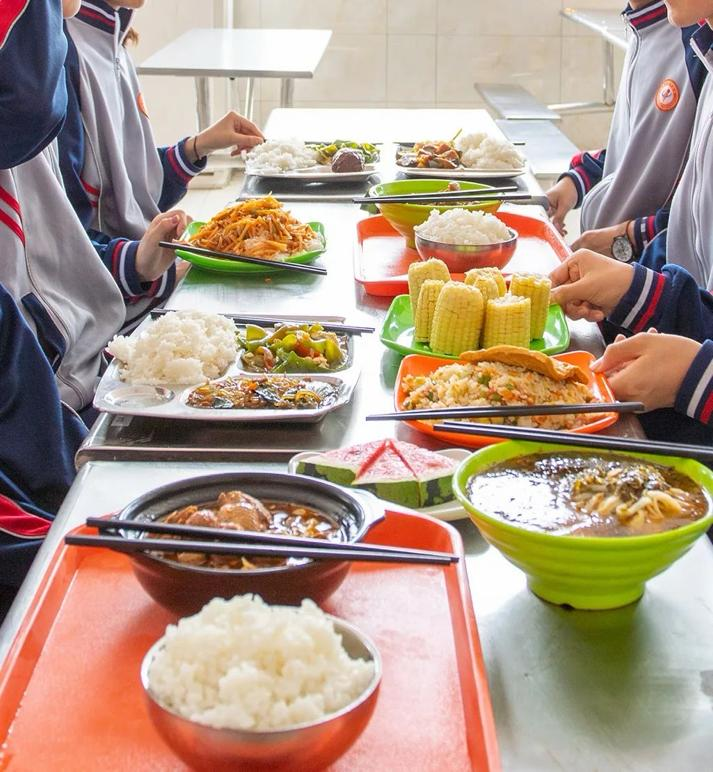
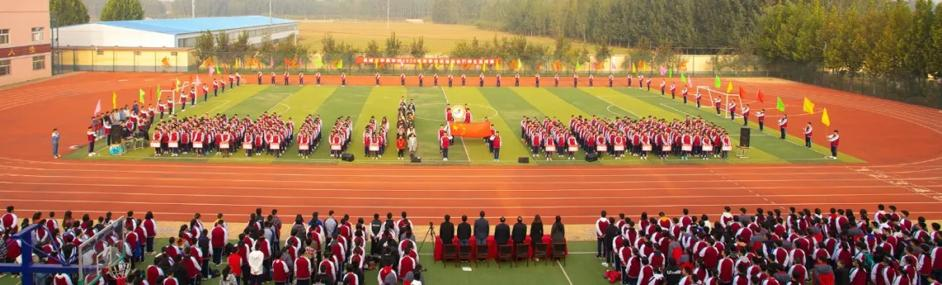
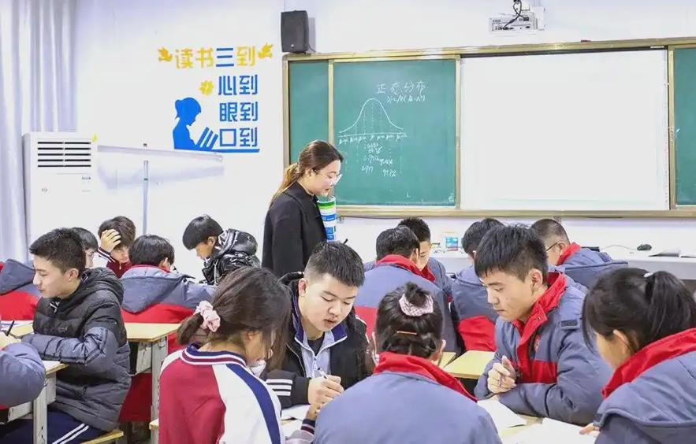
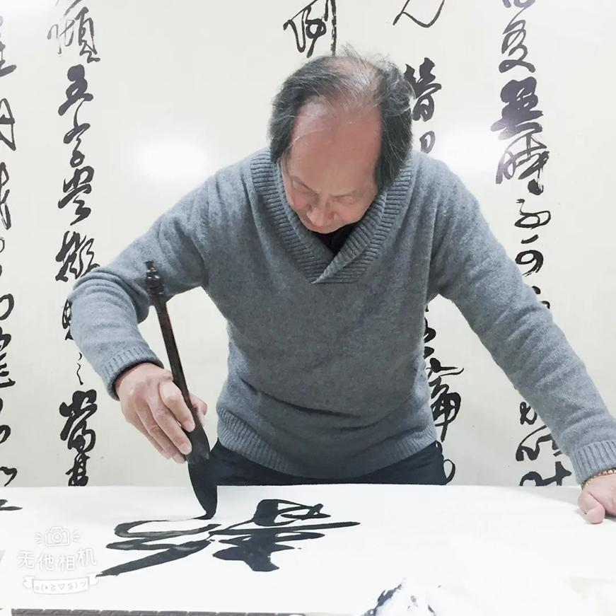
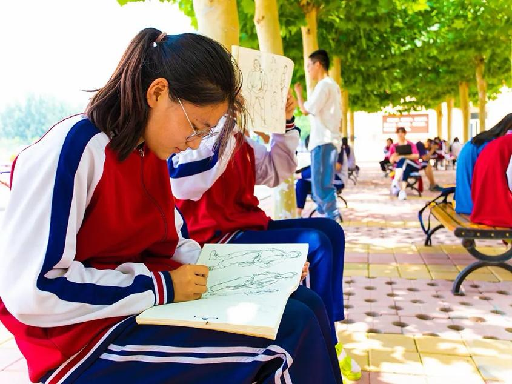
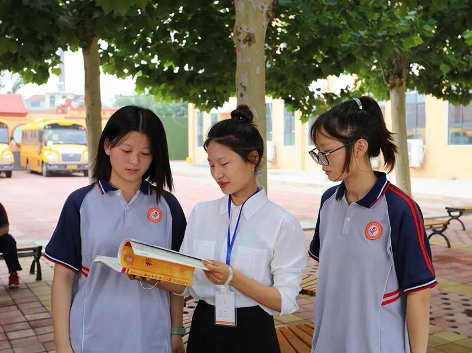
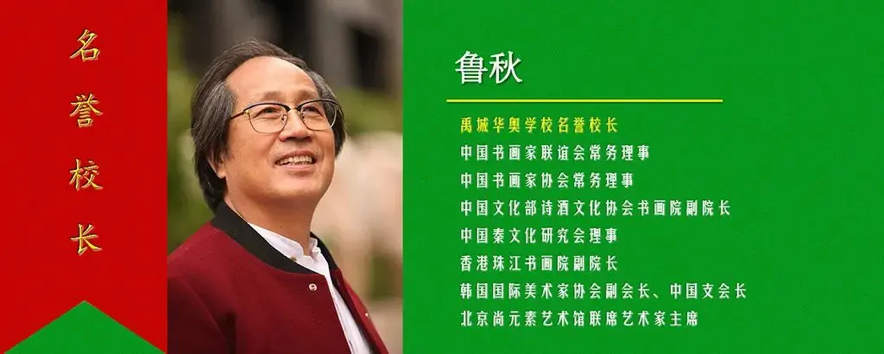

禹城华奥私立学校官网页面<!DOCTYPE<html lang="<head

<meta name="viewport" content="width=device-width, initial-scale=1.0">
    禹城华奥私立
   <style>
        * {
            margin: 0;
            padding: 0;
            box-sizing: border-box;
            font-family: "Microsoft YaHei", sans-serif;
        }
        body {
            line-height: 1.8;
            color: #333;
            background-color: #f8f9fa;
        }
        header {
            background: #0056b3;
            color: white;
            padding: 2rem;
            text-align: center;
        }
        header p {
            margin-top: 0.8rem;
            font-size: 1.1rem;
        }
        nav {
            background: #004085;
            padding: 1.2rem;
            text-align: center;
            position: sticky;
            top: 0;
            z-index: 99;
        }
        nav a {
            color: white;
            text-decoration: none;
            margin: 0 1rem;
            font-weight: bold;
            font-size: 1rem;
            transition: 0.3s;
        }
        nav a:hover {
            color: #ffc107;
        }
        section {
            padding: 3rem 5%;
            max-width: 1200px;
            margin: 0 auto;
        }
        h2 {
            color: #0056b3;
            margin-bottom: 2rem;
            border-bottom: 3px solid #0056b3;
            padding-bottom: 0.8rem;
            font-size: 2rem;
        }
        .section-desc {
            font-size: 1.1rem;
            margin-bottom: 2rem;
            text-align: justify;
        }
        .video-container {
            text-align: center;
            margin: 2.5rem 0;
        }
        video {
            max-width: 100%;
            height: auto;
            border-radius: 8px;
            box-shadow: 0 4px 12px rgba(0,0,0,0.15);
        }
        .image-grid {
            display: grid;
            grid-template-columns: repeat(auto-fit, minmax(260px, 1fr));
            gap: 2rem;
            margin-top: 2rem;
        }
        .image-card {
            background: white;
            padding: 1.2rem;
            border-radius: 8px;
            box-shadow: 0 2px 8px rgba(0,0,0,0.1);
            text-align: center;
            transition: 0.3s;
        }
        .image-card:hover {
            transform: translateY(-5px);
        }
        .image-card img {
            max-width: 100%;
            height: 200px;
            object-fit: cover;
            border-radius: 4px;
            margin-bottom: 1rem;
        }
        .image-card p {
            font-size: 1.05rem;
            font-weight: 500;
        }
        /* 招生信息专属样式 */
        .admission-box {
            background: #fff;
            padding: 2rem;
            border-radius: 8px;
            box-shadow: 0 2px 10px rgba(0,0,0,0.1);
            margin-bottom: 1.5rem;
        }
        .admission-box h3 {
            color: #0056b3;
            margin-bottom: 1rem;
            font-size: 1.4rem;
        }
        .admission-box p {
            font-size: 1.1rem;
            margin-bottom: 0.8rem;
        }
        .admission-tel {
            color: #d82626;
            font-weight: bold;
            font-size: 1.2rem;
        }
        footer {
            background: #0056b3;
            color: white;
            text-align: center;
            padding: 2rem;
            margin-top: 3rem;
        }
    </head>
<body>
    <h1>禹城华奥</h1><p>深耕教育二十余载，培育时代英才，打造兼具本土情怀与国际视野的优质</p></header>

<nav>
       <a href="#intro"></a>
<a href="#campus">校园环境<a href="#teachers">师资力量</a>
        <a href="#teaching">教学活动</a>
        <a href="#school-honor">学校荣誉<a href="#student-honor"></a>
<a href="#international</a><a href="#admission">招生信息</nav<!-- 学校简介板块（首页+视频<section id="intro">
       <h2>🏫 </h2><p class="section-desc">禹城市华奥私立学校创办于2002年，是经教育主管部门正式批准成立的一所集小学、初中、高中于一体的全日制、封闭式民办学校，坐落于山东省德州市禹城市禹石商贸街628号，地理位置优越，交通便利，校园环境静谧雅致，是莘莘学子求学成长的理想园地。学校历经二十余年的稳健发展，始终坚守教育初心，秉承“立德树人、全面发展、特色育人、追求卓越”的办学理念，以“培养有理想、有道德、有文化、有纪律的新时代青少年”为育人目标，不断优化办学条件、提升师资力量、创新教学模式，构建了文化课与特色课并重、素质教育与升学教育并行的完善育人</p>
<p class="section-desc">学校设计办学规模36个教学班，在校师生1100余人，2018年成功获批德州市普通高中办学资质，成为禹城市重点民办高中，填补了区域民办高中教育的空白。办学以来，学校始终坚持规范化、精细化管理，狠抓教学质量，注重学生品德修养、综合素质与学习能力的同步提升，凭借过硬的教学成果、良好的校风学风，赢得了家长、学生及社会各界的广泛认可与高度赞誉，成为鲁西北地区极具影响力的民办教育标杆。<!-- 首页视频 -->
        <div class="video-container"><video controls poster="学校门口.jpg">
<source src="学校介绍视频.mp4" type="video/mp4">
            </video</div><!-- 简介相关<div class="image-grid">
<div class="image
<p>学校大门</p>
            <div class="image-card">
</p>
</div>
         
</div>
        </div>
    <!-- 校园环境板块 -->
   <section id="campus<h2>🌳 校园环境</h2>
        <p class="section-desc">学校始终秉持“环境育人”理念，全力打造现代化、花园式校园，校园布局合理、设施齐全，教学区、运动区、生活区功能划分清晰，为师生提供安全、舒适、便捷的学习生活空间。校内绿植繁茂、环境清幽，文化氛围浓厚，每一处景观、每一面墙面都融入育人元素，让校园成为潜移默化滋养学生成长的第二课堂。</p>
        <p class="section-desc">教学设施方面，学校配备标准化教学楼、现代化实验室、多功能图书馆、专业艺术教室，各类教学仪器、多媒体设备、实验器材一应俱全，全面满足日常教学、实验实操、自主学习需求；运动场地完善，拥有标准田径场、篮球场、乒乓球场等各类运动场地，配套专业运动器材，保障学生体育锻炼、课外活动开展；生活配套贴心周到，干净整洁的学生食堂、温馨舒适的学生宿舍、24小时后勤保障服务，全方位解决学生生活需求，让学生全身心投入</p><div class="image-grid">
            <div class="image-card"></p>
</div>
           <div class="image-card
                </p></div>
<div class="image
<p>标准田径</p>
            </div>
            <div class="image-card"></p>
</div>
           <div class="image-card
<p>乒乓球活动</p>
            </div>
            <div class="image-card"></p>
</div>
           <div class="image-card
                </p></div>
<div class="image
<p>干净学生</p>
            </div>
            <div class="image-card">
               <p>食堂就餐环境</p>
            <div class="image-card">

                <p>校园主题集会</div></div>
</section>

   <!-- 师资力量板块 --><section id="<h2>👨‍🏫 </h2><p class="section-desc">学校始终把师资队伍建设作为办学核心，坚持“高薪引才、专业育才、事业留才”，组建了一支师德高尚、业务精湛、结构合理、经验丰富的专业化教师团队，现有专任教师百余人，其中中高级教师占比超65%，市级骨干教师、学科带头人、优秀班主任占比达40%，多位教师荣获省、市、区级教学能手、优质课获奖者等称号，师资力量稳居区域民办学校</p>

<p class="section-desc">团队教师均为本科及以上学历，持证上岗、专业对口，深耕中小学教育多年，深谙各学段教学规律与学生成长特点，既具备扎实的学科专业功底，又拥有丰富的课堂教学与升学辅导经验。学校建立常态化教研培训、教学考评、名师帮带机制，定期组织教师外出学习交流、参与教研研讨，持续提升教师教学水平与育人能力，全力打造“学习型、研究型、创新型”教师队伍。<p class="section-desc">学校坚持师德为先、育人为本，全体教师秉持爱心、耐心、责任心，用心关注每一位学生的成长，因材施教、精准施教，既做学生学业上的引路人，也做学生成长中的陪伴者，用专业教学助力学生成绩提升，用真心关怀呵护学生全面发展，为学校高质量办学提供了坚实的师资</p>
<div class="image<div class="image-card">

                <p>专业教师团队</div<div class="image-card">
               </p></div>
<div class="image
       <div class="image
<p>优秀教师</p>
            </div>
        </section<!-- 教学活动板块 -->
    <section id="teaching">
<h2>📚</h2<p class="section-desc">学校坚持以教学为核心，打造高效课堂、丰富课程体系、开展多元活动，构建“文化课夯实基础、特色课发展特长、实践活动提升素养”的全方位教学模式。文化课教学狠抓课堂效率，精准对接教材考点，分层教学、因材施教，针对不同基础学生制定个性化学习方案，全力提升学业成绩；特色课程独具优势，开设书法、美术、舞蹈、日语等多元化特色课程，挖掘学生潜能、培养兴趣特长，助力学生全面发展。<p class="section-desc">同时，学校高度重视师资队伍建设，定期开展教师培训、教研交流、教学比武等活动，不断提升教师专业素养与教学水平；常态化开展文艺汇演、校园竞赛、课外实践、社团活动等，丰富学生校园生活，锻炼学生实践能力、表达能力与团队协作能力，让学生在学习中成长、在活动中进步，实现德智体美劳</p><div class="image-grid">
            <div class="image-card">
                <p>日常教学课堂</div><div class="image-card">
                <p>师生</p>
</div>
           <div class="image-card
               <p>书法特色课程</p>
            <div class="image-card">

                <p>书法教师教学</div><div class="image-card">
                <p>美术</p>
</div>
           <div class="image-card
               <p>舞蹈特长课程</p>
            <div class="image-card">

                <p>日语特色教学</div><div class="image-card">
                
<p>校园文艺</p>
            </div>
            <div class="image-card">
                <p>课余趣味活动</div<div class="image-card">
               </p></div>

<p>教师专业</p>
            </div>
            <div class="image-card">
               <p>校园文化交流</p>
            </div</section><!-- 学校荣誉<section id="school-honor<h2>🏅 学校荣誉</h2>
        <p class="section-desc">二十余年砥砺耕耘，禹城华奥私立学校凭借扎实的办学成果、规范的办学管理、突出的育人成效，先后荣获各级教育部门、社会机构颁发的多项荣誉称号，每一份荣誉都是对华奥办学实力的认可，更是学校持续前行的动力。学校多次获评“民办教育先进单位”“教育教学质量先进学校”“德育工作先进集体”“校园安全管理示范校”等荣誉，顺利通过教育主管部门各项规范化验收，获评“规范化办学示范学校”</p>
       <p class="section-desc">在特色办学、教育创新领域，学校成果斐然，成功获批英国牛津国际AQA考试国际考点，成为区域少数具备国际升学考试资质的民办学校；同时荣获“素质教育特色学校”“家校共育示范基地”等称号，凭借良好的社会口碑与办学口碑，入选禹城市民办教育品牌名校，用实力铸就了民办教育的优质名片，用成绩践行了教书育人的初心使命。</p>
        <div class="image-grid"><div class="image-card">
       
                
                <p>学校荣誉牌匾展示</div<div class="image-card">
               
                <p>学校荣誉证书合集</p>
            <div class="image-card">

               <p>民办教育先进</p>
            </div>
        </section<!-- 学生荣誉板块 -->
    <section id="student-hon<h2>🎖️ 学生</h2>
<p class="section-desc">学校始终坚持以生为本，全力为学生搭建成长成才、展示自我的平台，鼓励学生积极参与学科竞赛、文体比赛、素质评选等各类活动，在各类赛事与评选中屡创佳绩、斩获殊荣，涌现出一大批品学兼优、特长突出的优秀学生。众多学生在市级、区级学科竞赛、书法美术大赛、文艺展演、体育赛事中摘金夺银，获得学业标兵、美德少年、优秀学生干部、特长之星等荣誉称号。<p class="section-desc">无论是文化课成绩拔尖的学习标兵，还是艺术体育领域崭露头角的特长学生，亦或是品德优良、乐于助人的美德少年，都在华奥校园里收获成长与认可，一张张荣誉证书、一座座奖杯，见证了华奥学子的努力与成长，也彰显了学校素质教育的丰硕成果，为学生未来升学、发展奠定了坚实基础。<div class="image-grid">
<div class="image</p></div>
<div class="image</p></div>
<div class="image学生竞赛获奖合影</div></div>
</section>

   <!-- 国际部板块 --><section id="<h2>🌍 国际部</h2>

   <p class="section-desc">禹城华奥私立学校国际部是学校打造国际化办学、拓宽学生升学渠道的核心特色板块，与英国嘉利山学院达成深度战略合作，正式开启华奥嘉利山国际留学项目，致力于培养兼具**中国灵魂、国际视野**的复合型国际化人才。国际部依托学校优质办学资源，引进国际化课程体系与教学模式，打造中外教结合的专业教学团队，为学生提供多元化</p><p class="section-desc">国际部实行**双轨制培养模式**，学生在校期间可同步学习国内文化课与国际课程，既能正常参加国内高考，冲刺国内优质高校；也可通过AQA国际考试体系，凭借考试成绩申请英国、新西兰、澳大利亚、俄罗斯、马来西亚等十余个国家及中国香港、澳门地区的知名大学，真正实现“国内升学+国际留学”双向选择。学校作为英国牛津国际认证中心官方授权的“牛津国际AQA考试国际考点”，让学生在校内即可完成国际考试报名、考试等全流程，省去繁琐流程，打通便捷国际升学通道。</p>
        <p class="section-desc">国际部配备专业外籍教师，均具备正规教学资质、丰富的国际教学经验，全英文授课打造沉浸式语言学习环境，全面提升学生英语听说读写能力与跨文化交流能力；同时搭配国内资深教师同步辅导，兼顾学业基础与国际素养，让学生无缝衔接国内外教育体系，实现多元化、高品质升学发展。<div class="image-grid">
<div class="image
         <div class="image-card<p>师生</p>
               <p>外籍教师教学</p>
            </div>
            <div class="image-card">
               <p>国际部双语</p>
            </div>
        </section<!-- 招生信息板块 -->
    <section id="admission"><h2></h2>
        <p class="section-desc">禹城华奥私立学校2024年度秋季招生全面开启，面向全市招收小学、初中、高中及国际部新生，秉持公平、公正、公开原则，择优录取，欢迎广大适龄学生报名咨询，携手华奥开启美好求学之旅</p>

   <div class="admission<h3>🎯 招生计划</h3>
           <p>◆ 小学部：一年级新生，招收2-6年级插班</p>
           <p>◆ 初中部：初一新生，招收初二、初三插班生</p>
            <p>◆ 高中部：高一新生，招收高二、高三插班生/</p>
<p>◆ 国际部：国际班新生，不限学段，择优录取</p>
        <div class="admission-box"><h3></h3>
            <p>1. 身体健康、品行端正，无不良校纪记录，符合各学段入学</p>
<p>2. 新生需携带户口本、出生证明、学籍证明、</p><p>3. 插班生/复读生需提供原学校成绩单、学籍转移证明</p>
            <p>4. 国际部学生需通过基础语言测试</p></div>

<div class="admission-box">
            <h3>📞 报名</h3>
            <p>◆ 现场报名：禹城华奥私立学校招生办（学校大门左侧招生服务中心）
<p>◆ 报名时间：即日起至名额报满为止，工作日8:00-18</p><p>◆ 学校地址：山东省德州市禹城市禹石商贸街628号</div<div class="admission-box">
<h3>💡</h3<p>1. 报名时需携带相关证件原件及复印件，现场填写报名登记表</p>
            <p>2. 学校可安排校园参观、课堂试听，提前电话预约即可</p>
            <p>3. 录取结果将电话通知家长，办理入学手续后正式注册学籍</p>
            <p>4. 学校提供全日制寄宿服务，配套完善食宿管理，方便家长</p>
        </div>
    <footer<p>禹城华奥私立学校 © 2024 | 地址：山东省德州市禹城市禹石商贸街628号 | 匠心办学 育见</p>
   </body</html>
```
